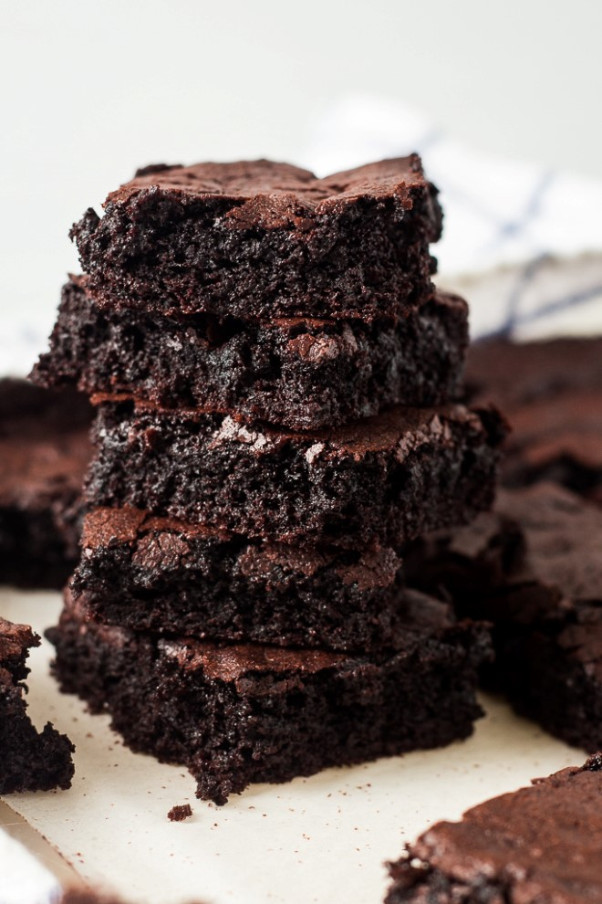

Brownies

Description
Would you believe that brownies made with just cocoa powder can be rich, fudgy, and irresistable?
This is the recipe you can make from scratch when you’re craving something chocolate. It is about
to become your go-to recipe when you are in a hurry.
Ingredients
- 1 cup butter, melted
- 2 cups white sugar
- 4 large eggs, room temperature
- 1 teaspoon vanilla
- 1 cup cocoa powder* (see note)
- 1 cup all purpose flour
- 1 1/2 teaspoons baking powder
- 1/2 teaspoon salt
Instructions
- Preheat the oven to 350 degrees farenheit. Grease a 9x13 inch pan with butter or line with parchment paper.
In a large bowl, whisk together the melted butter and sugar. Make sure the butter mixture is almost room
temperature and then add the eggs and vanilla.
- Beat until well incorporated. Beating in the eggs well is what forms that signature brownie crust on top.
- Add the flour, cocoa, baking powder and salt. Whisk until incorporated. Pour the batter into the prepared pan.
Bake at 350 degrees for 28-32 minutes or until center is set. Let cool at least slightly before cutting into bars.
*NOTE: I like to use dutch process cocoa powder in my brownies. It has a richer, deeper chocolate flavor and is much darker.
Recipe from
How to Make Brownies with Cocoa Powder on the Chocolate with Grace website